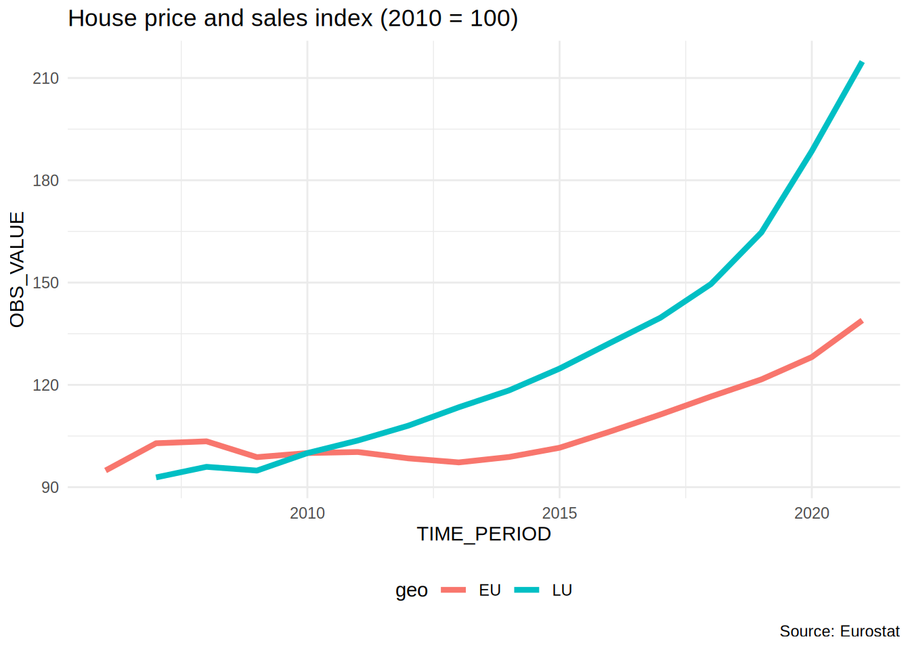

3 Project start
In this chapter, we are going to work together on a very simple project. This project will stay with us until the end of the book. As we will go deeper into the book together, you will rewrite that project by implementing the techniques I will teach you. By the end of the book you will have built a reproducible analytical pipeline. To get things going, we are going to keep it simple; our goal here is to get an analysis done, that’s it. We won’t focus on reproducibility (well, not beyond what was done in the previous chapter to set up our development environment). We are going to download some data, and analyse it, that’s it.
3.1 Housing in Luxembourg
We are going to download data about house prices in Luxembourg. Luxembourg is a little Western European country the author hails from that looks like a shoe and is about the size of .98 Rhode Islands. Did you know that Luxembourg is a constitutional monarchy, and not a kingdom like Belgium, but a Grand-Duchy, and actually the last Grand-Duchy in the World? Also, what you should know to understand what we will be doing is that the country of Luxembourg is divided into Cantons, and each Cantons into Communes. If Luxembourg was the USA, Cantons would be States and Communes would be Counties (or Parishes or Boroughs). What’s confusing is that “Luxembourg” is also the name of a Canton, and of a Commune, which also has the status of a city and is the capital of the country. So Luxembourg the country, is divided into Cantons, one of which is called Luxembourg as well, cantons are divided into communes, and inside the canton of Luxembourg, there’s the commune of Luxembourg which is also the city of Luxembourg, sometimes called Luxembourg City, which is the capital of the country.
What you should also know is that the population is about 672’050 people as of writing (July 2024), half of which are foreigners. Around 400’000 persons work in Luxembourg, of which half do not live in Luxembourg; so every morning from Monday to Friday, 200’000 people enter the country to work and then leave in the evening to go back to either Belgium, France or Germany, the neighbouring countries. As you can imagine, this puts enormous pressure on the transportation system and on the roads, but also on the housing market; everyone wants to live in Luxembourg to avoid the horrible daily commute, and everyone wants to live either in the capital city, or in the second largest urban area in the south, in a city called Esch-sur-Alzette.
The plot below shows the value of the House Price Index (HPI) over time for Luxembourg and the European Union:
If you want to download the data and follow along, click here1.
Let us take a look at the definition of the HPI (taken from the HPI’s metadata2 page):
The House Price Index (HPI) measures inflation in the residential property market. The HPI captures price changes of all types of dwellings purchased by households (flats, detached houses, terraced houses, etc.). Only transacted dwellings are considered, self-build dwellings are excluded. The land component of the dwelling is included.
So from the plot, we can see that the price of dwellings more than doubled between 2010 and 2021; the value of the index is 214.81 in 2021 for Luxembourg, and 138.92 for the European Union as a whole.
There is a lot of heterogeneity though; the capital and the communes right next to the capital are much more expensive than communes from the less densely populated north, for example. The south of the country is also more expensive than the north, but not as much as the capital and surrounding communes. Not only is price driven by demand, but also by scarcity; in 2021, 0.5% of residents owned 50% of the buildable land for housing purposes (Source: Observatoire de l’Habitat, Note 29, archived download link3).
Our project will be quite simple; we are going to download some data, supplied as an Excel file, compiled by the Housing Observatory (Observatoire de l’Habitat, a service from the Ministry of Housing, which monitors the evolution of prices in the housing market, among other useful services like the identification of vacant lots). The advantage of their data when compared to Eurostat’s data is that the data is disaggregated by commune. The disadvantage is that they only supply nominal prices, and no index (and the data is trapped inside Excel and not ready for analysis with Python). Nominal prices are the prices that you read on price tags in shops. The problem with nominal prices is that it is difficult to compare them through time. Ask yourself the following question: would you prefer to have had 500€ (or USDs) in 2003 or in 2023? You probably would have preferred them in 2003, as you could purchase a lot more with $500 then than now. In fact, according to a random inflation calculator I googled, to match the purchasing power of $500 in 2003, you’d need to have $793 in 2023 (and I’d say that we find very similar values for €). But it doesn’t really matter if that calculation is 100% correct: what matters is that the value of money changes, and comparisons through time are difficult, hence why an index is quite useful. So we are going to convert these nominal prices to real prices. Real prices take inflation into account and so allow us to compare prices through time.
So to summarise; our goal is to:
- Get data trapped inside an Excel file into a neat data frame;
- Convert nominal to real prices using a simple method;
- Make some tables and plots and call it a day (for now).
We are going to start in the most basic way possible; we are simply going to write a script and deal with each step separately.
3.2 Saving trapped data from Excel
Getting data from Excel into a tidy data frame can be very tricky. This is because very often, Excel is used as some kind of dashboard or presentation tool. So data is made human-readable, in contrast to machine-readable. Let us quickly discuss this topic as it is essential to grasp the difference between the two (and in my experience, a lot of collective pain inflicted to statisticians and researchers could have been avoided if this concept was more well-known). The picture below shows an Excel file made for human consumption:

So why is this file not machine-readable? Here are some issues:
- The table does not start in the top-left corner of the spreadsheet, which is where most importing tools expect it to be;
- The spreadsheet starts with a header that contains an image and some text;
- Numbers are actually text and use “,” as the thousands separator;
- You don’t see it in the screenshot, but each year is in a separate sheet.
That being said, this Excel file is still very tame, and going from this Excel to a tidy data frame will not be too difficult. In fact, we suspect that whoever made this Excel file is well aware of the contradicting requirements of human and machine-readable formatting of data, and strove to find a compromise. Because more often than not, getting human-readable data into a machine-readable format is a nightmare. We could call data like this machine-friendly data.
If you want to follow along, you can download the Excel file here4 (downloaded on January 2023 from the luxembourguish open data portal5). But you don’t need to follow along with code, because I will link the completed scripts for you to download later.
Each sheet contains a dataset with the following columns:
- Commune: the commune (the smallest administrative division of territory);
- Nombre d’offres: the total number of selling offers;
- Prix moyen annoncé en Euros courants: Average selling price in nominal Euros;
- Prix moyen annoncé au m2 en Euros courants: Average selling price in square meters in nominal Euros.
For ease of presentation, I’m going to show you each step of the analysis here separately, but I’ll be putting everything together in a single script once I’m done explaining each step. So first, let’s import the main packages I’ll be using for the analysis (I’ll need to import some others as I go):
import polars as pl
import polars.selectors as cs
import reI will be using the polars package to manipulate data and polars.selectors contains handy functions to refer to columns while re is for regular expressions which I will need below.
Next, the code below downloads the data, and puts it in a data frame:
# The url below points to an Excel file
# hosted on the book's github repository
url = "https://is.gd/1vvBAc"
# Let's first download the file into a temporary file and then
# return its path
from tempfile import NamedTemporaryFile
from requests import get
response = get(url)
with NamedTemporaryFile(delete = False, suffix = '.xlsx') as temp_file:
temp_file.write(response.content)
temp_file_path = temp_file.name220016The code above downloads the Excel file, saves it in a temporary folder and returns the path to the file. We can now use temp_file_path to read the data using pl.read_excel().
Next, I will write a function to read all the sheets of the Excel workbook. Ideally, this wouldn’t be needed, because polars can read all the sheets of an Excel workbook in one go and return a list of sheets, but I want to add a column with the year. So I write this function that reads one sheet and adds the year column, and then I map this function over a list of sheet names:
def read_excel(excel_file, sheet):
out = pl.read_excel(
engine = 'xlsx2csv',
source = excel_file,
sheet_name = sheet,
schema_overrides = {"Nombre d'offres": pl.String},
read_options = {
"skip_rows": 6,
"has_header": True
}
).with_columns(pl.lit(sheet).alias("year"))
return outI set some options in the pl.read_excel() function to correctly read the file. I’ll let you play around with these options to see what happens if you don’t set them.
I now need a little helper function that I will use to map over the sheet names. This function sets the excel_file argument of the previously defined read_excel() function we wrote to temp_file_path which points to the Excel file. I will then map over its sheet argument.
def wrap_read_excel(sheet):
out = read_excel(excel_file = temp_file_path,
sheet = sheet)
return outLet’s now create the list of sheet names:
sheets = list(map(str, range(2010, 2022)))I can now map the function over the list of sheets and concatenate them into a single polars data frame using pl.concat():
raw_data = pl.concat(list(map(wrap_read_excel, sheets)))In the preface, I mentioned that the Python code in this book would have a very distinct R-like accent. Mapping over a list instead of writing a for-loop is an example of this. Feel free to use a for-loop if you’re more comfortable with them!
The next function will be used below to clean the column names. For example, a column called something like "House prices in €" would get changed to "house_prices_in_", removing the "€" sign, replacing spaces with "_" setting the string to lower case. If I was using pandas, I could have used clean_columns() from the skimpy package, but unfortunately this function doesn’t work with polars data frames. So I wrote this little function to clean the column names instead, partly inspired by the clean_names() function from the {janitor} R package.
def clean_names(string):
# inspired by https://nadeauinnovations.com/post/2020/11/python-tricks-replace-all-non-alphanumeric-characters-in-a-string/
clean_string = [s for s in string if s.isalnum() or s.isspace()]
out = "".join(clean_string).lower()
out = re.sub(r"\s+", "_", out)
out = out.encode("ascii", "ignore").decode("utf-8")
return outWe need to map clean_names() to each column. We can select all the columns using pl.all() and map the function to the column’s name attribute.
raw_data = raw_data.select(pl.all().name.map(clean_names))Finally, let’s rename some columns and do some more cleaning: - converting column types - ensuring consistent names for the communes (for example, sometimes the commune of Luxembourg is spelled “Luxembourg”, sometimes “Luxembourg-Ville” - converting columns to their right types (but not the n_offers column yet…)
This is all done in the snippet below:
raw_data = (
raw_data
.rename(
{
"commune": "locality",
"nombre_doffres": "n_offers",
"prix_moyen_annonc_en_courant": "average_price_nominal_euros",
"prix_moyen_annonc_au_m_en_courant": "average_price_m2_nominal_euros"
}
)
.with_columns(
cs.all().str.strip_chars()
)
.with_columns(
cs.contains("average").cast(pl.Float64, strict = False)
)
.with_columns(
# In some sheets it's "Luxembourg", in others it's "Luxembourg-Ville"
pl.col("locality").str.replace_all("Luxembourg.*", "Luxembourg")
)
.with_columns(
# In some sheets it's "Pétange", in others it's "Petange"
pl.col("locality").str.replace_all("P.*tange", "Pétange")
)
)In practice, it is unlikely that you would have written the above code in one go. Instead you would have checked the data, done something on it, then checked it again, etc. But as I mentioned this is not a book about learning how to clean data, so let’s just take this code as-is.
If you are familiar with the {tidyverse} (Wickham et al. 2019) family of packages from the R programming language, the above code should be quite relatively easy to follow. If you are more familiar with pandas, I believe that reading the code above should still be easy as well. What might be more difficult if you were brought up on Python exclusively is mapping functions to elements of lists instead of using for-loops. Don’t worry about it too much, and use for-loops if you wish. Just remember that this book is not about Python per se, but about building reproducible pipelines. The focus will be on other things.
Running this code results in a tidy data set:
raw_data
shape: (1_313, 5)
| locality | n_offers | average_price_nominal_euros | average_price_m2_nominal_euros | year |
|---|---|---|---|---|
| str | str | f64 | f64 | str |
| "Bascharage" | "192" | 593698.31 | 3603.57 | "2010" |
| "Beaufort" | "266" | 461160.29 | 2902.76 | "2010" |
| "Bech" | "65" | 621760.22 | 3280.51 | "2010" |
| "Beckerich" | "176" | 444498.68 | 2867.88 | "2010" |
| "Berdorf" | "111" | 504040.85 | 3055.99 | "2010" |
| … | … | … | … | … |
| "Winseler" | "41" | 979696.17 | 3921.98 | "2021" |
| "Wormeldange" | "50" | 1052340.8 | 6391.339 | "2021" |
| "Moyenne nation… | null | 1317473.9 | 6743.722 | "2021" |
| "Total d'offres… | "11925" | null | null | "2021" |
| "Source : Minis… | null | null | null | "2021" |
But as you can see at the bottom, we still have some stuff that doesn’t belong in the locality column. Let’s also check for missing values in the "average_price_nominal_euros" column:
(
raw_data
.filter(pl.col("average_price_nominal_euros").is_null())
)
shape: (186, 5)
| locality | n_offers | average_price_nominal_euros | average_price_m2_nominal_euros | year |
|---|---|---|---|---|
| str | str | f64 | f64 | str |
| "Consthum" | "29" | null | null | "2010" |
| "Esch-sur-Sûre" | "7" | null | null | "2010" |
| "Heiderscheid" | "29" | null | null | "2010" |
| "Hoscheid" | "26" | null | null | "2010" |
| "Saeul" | "14" | null | null | "2010" |
| … | … | … | … | … |
| "Waldbredimus" | "25" | null | null | "2021" |
| "Weiler-la-Tour… | "28" | null | null | "2021" |
| "Weiswampach" | "28" | null | null | "2021" |
| "Total d'offres… | "11925" | null | null | "2021" |
| "Source : Minis… | null | null | null | "2021" |
It turns out that there are no prices for certain communes, but that we also have some rows with garbage in there. Let’s go back to the raw data to see what this is about:
So it turns out that there are some rows that we need to remove. We can start by removing rows where locality is missing. Then we have a row where locality is equal to “Total d’offres”. This is simply the total of every offer from every commune. We could keep that in a separate data frame, or even remove it. The very last row states the source of the data and we can also remove it. Finally, in the screenshot above, we see another row that we don’t see in our filtered data frame: one where n_offers would be missing. This row gives the national average for columns average_prince_nominal_euros and average_price_m2_nominal_euros. What we are going to do is create two datasets: one with data on communes, and the other on national prices. Let’s first remove the rows stating the sources:
raw_data = (
raw_data
.filter(~pl.col("locality").str.contains("Source"))
)Let’s now only keep the communes in our data:
commune_level_data = (
raw_data
.filter(~pl.col("locality").str.contains("nationale|offres"))
.filter(pl.col("locality").is_not_null())
# This is needed on Windows...
.with_columns(
pl.col("locality").str.replace_all("\351", "é")
)
.with_columns(
pl.col("locality").str.replace_all("\373", "û")
)
.with_columns(
pl.col("locality").str.replace_all("\344", "ä")
)
)And let’s create a dataset with the national data as well:
country_level = (
raw_data
.filter(pl.col("locality").str.contains("nationale"))
.select(cs.exclude("n_offers"))
)
offers_country = (
raw_data
.filter(pl.col("locality").str.contains("Total d.offres"))
.select(["year", "n_offers"])
)
country_level_data = (
country_level.join(offers_country, on = "year")
.with_columns(pl.lit("Grand-Duchy of Luxembourg").alias("locality"))
)Let’s take a look at it:
country_level_data
shape: (12, 5)
| locality | average_price_nominal_euros | average_price_m2_nominal_euros | year | n_offers |
|---|---|---|---|---|
| str | f64 | f64 | str | str |
| "Grand-Duchy of… | 569216.0 | 3251.0 | "2010" | "19278" |
| "Grand-Duchy of… | 597784.711711 | 3375.088978 | "2011" | "21253" |
| "Grand-Duchy of… | 596347.972382 | 3408.711732 | "2012" | "14773" |
| "Grand-Duchy of… | 644884.979694 | 3589.790108 | "2013" | "13298" |
| "Grand-Duchy of… | 663639.733049 | 3647.123608 | "2014" | "9852" |
| … | … | … | … | … |
| "Grand-Duchy of… | 812919.0678 | 4274.039466 | "2017" | "16055" |
| "Grand-Duchy of… | 874685.96 | 4562.288 | "2018" | "13534" |
| "Grand-Duchy of… | 970589.13 | 5038.614 | "2019" | "12171" |
| "Grand-Duchy of… | 1180466.6 | 6364.361 | "2020" | "11757" |
| "Grand-Duchy of… | 1317473.9 | 6743.722 | "2021" | "11925" |
Now the data looks clean, and we can start the actual analysis… or can we? Before proceeding, it would be nice to make sure that we got every commune in there. For this, we need a list of communes from Luxembourg. Thankfully, Wikipedia has such a list6.
An issue with scraping tables off the web is that they might change in the future. It is therefore a good idea to save the page by right clicking on it and then selecting save as, and then re-hosting it. I use Github pages to re-host the Wikipedia page above here7. I now have full control of this page, and won’t get any bad surprises if someone decides to eventually update it. Instead of re-hosting it, you could simply save it as any other file of your project.
So let’s scrape and save this list. Let’s first load the required packages:
from urllib.request import urlopen
from bs4 import BeautifulSoup
from pandas import read_html
from io import StringIOand let’s get the raw data:
url = 'https://b-rodrigues.github.io/list_communes/'
html = urlopen(url)
tables = (
BeautifulSoup(html, 'html.parser')
.find_all("table")
)
current_communes_raw = read_html(StringIO(str(tables[1])))[0]I won’t go into much details, but the using Beautifoulsoup() it is possible to parse the html from the web page and get the tables out using the .find_all() method. The first table from that list is the one we’re interested in, and using the read_html() function from the pandas package we can get that table into a data frame (turns out we can’t completely avoid using pandas!).
We can now use polars to clean the table:
# current_communes has a MultiIndex, so drop it
current_communes_raw.columns = current_communes_raw.columns.droplevel()
current_communes_pl = (
pl.DataFrame(current_communes_raw)
.select(pl.col("Name.1").alias("commune"))
.with_columns(
pl.col("commune").str.replace_all("\351", "é")
)
.with_columns(
pl.col("commune").str.replace_all("\373", "û")
)
.with_columns(
pl.col("commune").str.replace_all("\344", "ä")
)
.with_columns(
# This removes the dagger symbol next to certain communes names
# in other words it turns "Commune †" into "Commune".
pl.col("commune").str.replace_all(" .$", "")
)
)Finally, we can save the communes into a simple list:
current_communes = list(current_communes_pl["commune"])Let’s see if we have all the communes in our data, if the code below results in an empty list, then we’re good:
(
commune_level_data
.filter(~pl.col("locality").is_in(current_communes))
.get_column("locality")
.unique()
.sort()
.to_list()
)['Bascharage', 'Boevange-sur-Attert', 'Burmerange', 'Clémency', 'Commune', 'Consthum', 'Ermsdorf', 'Erpeldange', 'Eschweiler', 'Heiderscheid', 'Heinerscheid', 'Hobscheid', 'Hoscheid', 'Hosingen', 'Kaerjeng', 'Luxembourg', 'Medernach', 'Mompach', 'Munshausen', 'Neunhausen', 'Rosport', 'Septfontaines', 'Tuntange', 'Wellenstein']We see many communes that are in our commune_level_data, but not in current_communes. There’s one obvious reason: differences in spelling, for example, “Kaerjeng” in our data, but “Käerjeng” in the table from Wikipedia. But there’s also a less obvious reason; since 2010, several communes have merged into new ones. So there are communes that are in our data in 2010 and 2011, but disappear from 2012 onwards. So we need to do several things: first, get a list of all existing communes from 2010 onwards, and then, harmonise spelling. Here again, we can use a list from Wikipedia, and here again, I decide to re-host it on Github pages to avoid problems in the future:
# Need to also check former communes
url = 'https://b-rodrigues.github.io/former_communes/#Former_communes/'
html = urlopen(url)
tables = (
BeautifulSoup(html, 'html.parser')
.find_all("table")
)
# The third table (...hence the '2' in tables[2]...) is the one we need
former_communes_raw = read_html(StringIO(str(tables[2])))[0]
former_communes_pl = (
pl.DataFrame(former_communes_raw)
.with_columns(
pl.col("Name").str.replace_all("\351", "é")
)
.with_columns(
pl.col("Name").str.replace_all("\373", "û")
)
.with_columns(
pl.col("Name").str.replace_all("\344", "ä")
)
.select(pl.col("Name").alias("commune"))
)
former_communes_pl
shape: (40, 1)
| commune |
|---|
| str |
| "Arsdorf" |
| "Asselborn" |
| "Bascharage" |
| "Bastendorf" |
| "Bigonville" |
| … |
| "Rosport" |
| "Septfontaines" |
| "Tuntange" |
| "Wellenstein" |
| "Wilwerwiltz" |
As you can see, since 2010 many communes have merged to form new ones. We can now combine the list of current and former communes:
# Combine former and current communes
communes = (
pl.concat([former_communes_pl, current_communes_pl])
.get_column("commune")
.unique()
.sort()
.to_list()
)
(
commune_level_data
.filter(~pl.col("locality").is_in(communes))
.get_column("locality")
.unique()
.sort()
.to_list()
)['Clémency', 'Commune', 'Erpeldange', 'Kaerjeng', 'Luxembourg']And now we can harmonize the spelling:
# There's certain communes with different spelling between
# wikipedia and our data, so let's correct the spelling
# on the wikipedia ones
# ['Clémency', 'Erpeldange', 'Kaerjeng', 'Luxembourg', 'Pétange']
communes_clean = (
pl.concat([former_communes_pl, current_communes_pl])
.with_columns(
pl.when(pl.col("commune").str.contains("Cl.mency"))
.then(pl.lit("Clémency"))
.otherwise(pl.col("commune")).alias("commune")
)
.with_columns(
pl.when(pl.col("commune").str.contains("Erpeldange"))
.then(pl.lit("Erpeldange"))
.otherwise(pl.col("commune")).alias("commune")
)
.with_columns(
pl.when(pl.col("commune").str.contains("City"))
.then(pl.lit("Luxembourg"))
.otherwise(pl.col("commune")).alias("commune")
)
.with_columns(
pl.when(pl.col("commune").str.contains("K.*jeng"))
.then(pl.lit("Kaerjeng"))
.otherwise(pl.col("commune")).alias("commune")
)
.with_columns(
pl.when(pl.col("commune").str.contains("P.*tange"))
.then(pl.lit("Pétange"))
.otherwise(pl.col("commune")).alias("commune")
)
.get_column("commune")
.unique()
.sort()
.to_list()
)Let’s run our test again:
(
commune_level_data
.filter(~pl.col("locality").is_in(communes_clean))
.get_column("locality")
.unique()
.sort()
.to_list()
)['Commune']Great! When we compare the communes that are in our data with every commune that has existed since 2010, we don’t have any commune that is unaccounted for. So are we done with cleaning the data? Yes, we can now start with analysing the data. Take a look here8 to see the finalised script. Also read some of the comments that I’ve added. This is a typical Python script, and at first glance, one might wonder what is wrong with it. Actually, not much, but the problem if you leave this script as it is, is that it is very likely that we will have problems rerunning it in the future. As it turns out, this script is not reproducible. But we will discuss this in much more detail later on. For now, let’s analyse our cleaned data.
3.3 Analysing the data
We are now going to analyse the data. The first thing we are going to do is compute a Laspeyeres price index. This price index allows us to make comparisons through time; for example, the index at year 2012 measures how much more expensive (or cheaper) housing became relative to the base year (2010). However, since we only have one ‘good’ (housing), this index becomes quite simple to compute: it is nothing but the prices at year t divided by the prices in 2010 (if we had a basket of goods, we would need to use the Laspeyeres index formula to compute the index at all periods).
For this section, I will perform a rather simple analysis. I will immediately show you the script: take a look at it here9. For the analysis I selected 5 communes and plotted the evolution of prices compared to the national average.
This analysis might seem trivially simple, but it contains all the needed ingredients to illustrate everything else that I’m going to teach you in this book.
Most analyses would stop here: after all, we have what we need; our goal was to get the plots for the 5 communes of Luxembourg, Esch-sur-Alzette, Mamer, Schengen (which gave its name to the Schengen Area10) and Wincrange. However, let’s ask ourselves the following important questions:
- How easy would it be for someone else to rerun the analysis?
- How easy would it be to update the analysis once new data gets published?
- How easy would it be to reuse this code for other projects?
- What guarantee do we have that if the scripts get run in 5 years, with the same input data, we get the same output?
Let’s answer these questions one by one.
3.4 Your project is not done
3.4.1 How easy would it be for someone else to rerun the analysis?
The analysis is composed of two Python scripts, one to prepare the data, and another to actually run the analysis proper. Performing the analysis might seem quite easy, because each script contains comments as to what is going on, and the code is not that complicated. However, we are missing any project-level documentation that would provide clear instructions as to how to run the analysis. This might seem simple for us who wrote these scripts, but we are familiar with Python, and this is still fresh in our brains. Should someone less familiar with Python have to run the script, there is no clue for them as to how they should do it. And of course, should the analysis be more complex (suppose it’s composed of dozens of scripts), this gets even worse. It might not even be easy for you to remember how to run this in 5 months!
And what about the required dependencies? Many packages were used in the analysis. How should these get installed? Ideally, the same versions of the packages you used and the same version of Python should get used by that person to rerun the analysis. Thankfully, you can share the Pipfile and the Pipfile.lock files from the previous chapters to make it easier for them, so by setting up our development environment, we also made it easier for future you or replicators to install the required dependencies!
3.4.2 How easy would it be to update the project?
If new data gets published, all the points discussed previously are still valid, plus you need to make sure that the updated data is still close enough to the previous data such that it can pass through the data cleaning steps you wrote. You should also make sure that the update did not introduce a mistake in past data, or at least alert you if that is the case. Sometimes, when new years get added, data for previous years also get corrected, so it would be nice to make sure that you know this. Also, in the specific case of our data, communes might get fused into a new one, or maybe even divided into smaller communes (even though this has not happened in a long time, it is not entirely out of the question).
In summary, what is missing from the current project are enough tests to make sure that an update to the data can happen smoothly.
3.4.3 How easy would it be to reuse this code for another project?
Said plainly, not very easy. With code in this state you have no choice but to copy and paste it into a new script and change it adequately. For re-usability, nothing beats structuring your code into functions and ideally you would even package them. We are going to learn just that in future chapters of this book.
But sometimes you might not be interested in reusing code for another project: however, even if that’s the case, structuring your code into functions and packaging them makes it easy to reuse code even inside the same project. Look at the last part of the analysis.py script: we copied and pasted the same code 5 times and only slightly changed it. We are going to learn how not to repeat ourselves by using functions and you will immediately see the benefits of writing functions, even when simply reusing them inside the same project.
3.4.4 What guarantee do we have that the output is stable through time?
Now this might seem weird: after all, if we start from the same dataset, does it matter when we run the scripts? We should be getting the same result if we build the project today, in 5 months or in 5 years. Well, not necessarily. Programming languages such as Python evolve quickly, and packages even more so. There is no guarantee that the authors of the packages will not change the package’s functions to work differently, or take arguments in a different order, or even that the packages will all be available at all in 5 years. And even if the packages are still available and function the same, bugs in the packages might get corrected which could alter the result. This might seem like a non-problem; after all, if bugs get corrected, shouldn’t you be happy to update your results as well? But this depends on what it is we’re talking about. Sometimes it is necessary to reproduce results exactly as they were, even if they were wrong, for example in the context of an audit.
So we also need a way to somehow snapshot and freeze the computational environment that was used to create the project originally.
3.5 Conclusion
We now have a basic analysis that has all we need to get started. In the coming chapters, we are going to learn about topics that will make it easy to write code that is more robust, better documented and tested, and most importantly easy to rerun (and thus to reproduce the results). The first step will actually not involve having to start rewriting our scripts though; next, we are going to learn about Git, a tool that will make our life easier by versioning our code.
https://is.gd/AET0ir↩︎
https://archive.is/OrQwA, archived link for posterity.↩︎
https://archive.org/download/note-29/note-29.pdf↩︎
https://is.gd/1vvBAc↩︎
https://data.public.lu/en/datasets/prix-annonces-des-logements-par-commune/↩︎
https://w.wiki/6nPu↩︎
https://is.gd/lux_communes↩︎
https://is.gd/bGvNKG↩︎
https://is.gd/7MqLjX↩︎
https://en.wikipedia.org/wiki/Schengen_Area↩︎